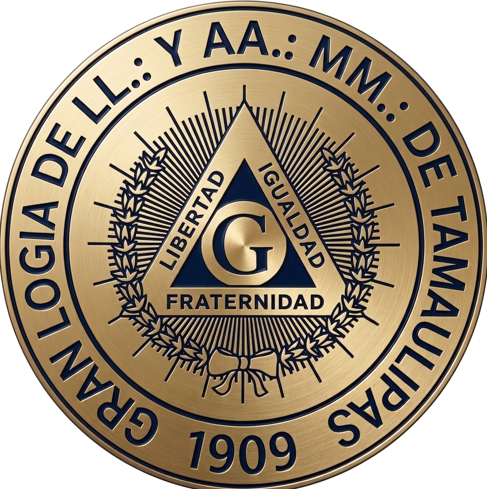

Libertad, Igualdad, Fraternidad
Bajo la bóveda celeste de nuestro estado, la Gran Logia de Tamaulipas trabaja incansablemente por el perfeccionamiento moral e intelectual de sus miembros, promoviendo los más altos valores de fraternidad y servicio a la humanidad.
Forjar hombres libres y de buenas costumbres que contribuyan al progreso de la sociedad tamaulipeca.
Ser un referente ético y cultural, manteniendo vivas las tradiciones de nuestra milenaria orden.